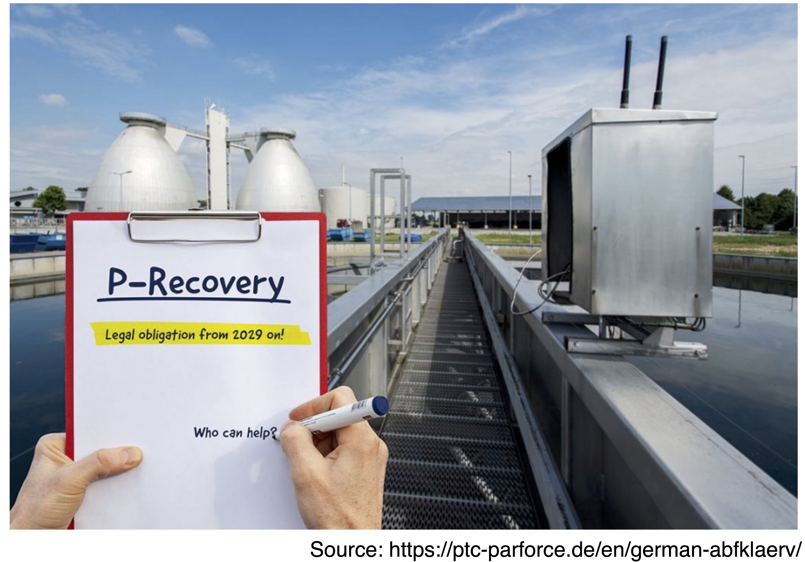

Nutrient Mapping in Japan Sewage Treatment System

Phosphorus recovery potential from sewage sludge in Japan (paper is pending review))
Nitrogen and Phosphorus discharge from sewage treatment in Japan
 Nitrogen and Phosphorus discharge from sewage treatment in Japan
Nitrogen and Phosphorus discharge from sewage treatment in Japan